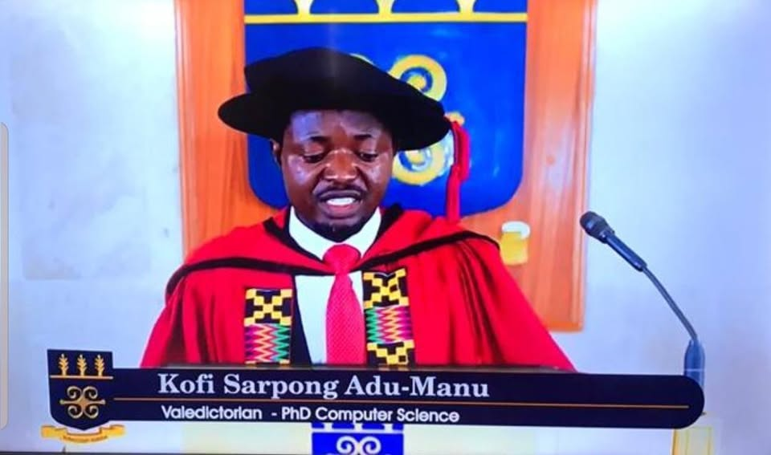

Biography
Dr. Kofi Sarpong Adu-Manu is an Associate Professor of Wireless Communication Networks in the Department of Computer Science at the University of Ghana. He is an academic with over 45 publications and a consultant with rich experience.
His current research interests include Wireless Sensor Networks for environmental monitoring applications, Artificial Intelligence, and Applications of IT in Education and Society. He is an educational technology consultant for UNICEF Ghana, World Bank, Commonwealth of Learning, and UNESCO Ghana. He supports technology in education for the Center for National Distance Learning and Open Schooling (CENDLOS), an agency under the Ministry of Education.
Dr. Adu-Manu received a University of Rochester (UoR) PhD scholarship in 2015 and a research grant from the Carnegie Corporation of New York through the University of Ghana to support early-career faculty research capacity development under its “Building a New Generation of Academics – BANGA Africa project”. He also received scholarships from the University of Oldenburg and the University of Ghana under the partnership projects known as the DEMIS mobility programme. He is a Programme Assessor for the Ghana Tertiary Education Commission (GTEC).